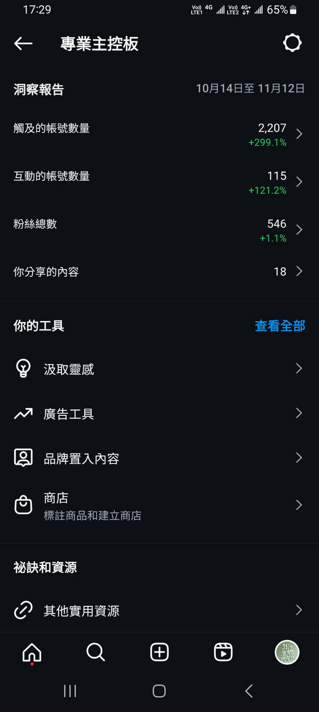
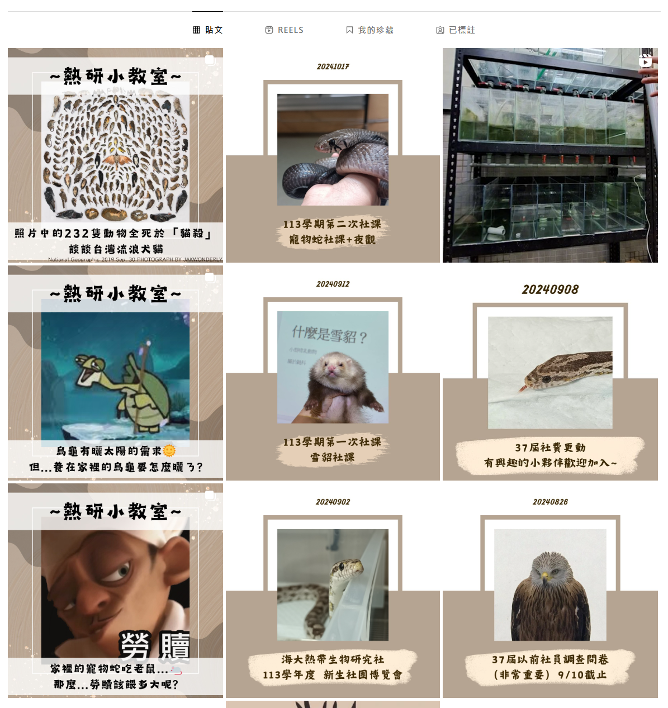
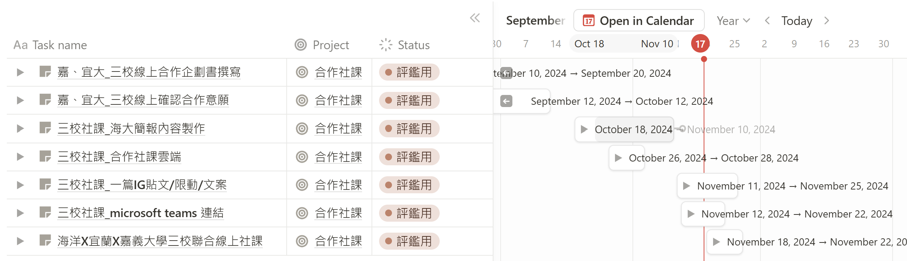
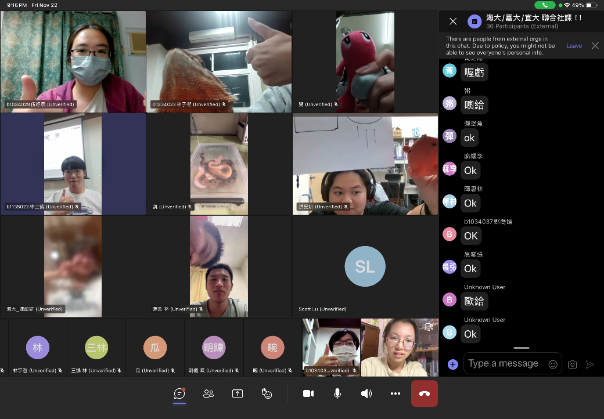

國立臺灣海洋大學熱帶生物研究社第 37 屆社長任內的數位化整合紀錄。把 Google Drive 雲端、Wordpress 官網、Notion、Simplymeet 預約、portaly.cc 連結樹、IG/FB 帳號、棉花糖匿名問答串成一套對內協作與對外形象的工具鏈。113 年度下學期 IG 觸及達 2,980 人，非粉絲觸及增長 +603%、互動次數增長 +537%。

# 工具鏈：七個平台的角色分工
上任後重新建置社團的數位資產，把過去散落在不同人手上的資料、平台、流程統一到下列七個工具：
| 平台 | 角色 |
|---|---|
| Google Drive 雲端 | 統一管理活動報告、課程 SOP、社團流程；分權限確保資料整合與可追溯 |
| Notion | 對內主要管理工具，記錄活動進度、任務分配、會議紀錄 |
| Wordpress 官網 | 對外社團簡介、活動消息、課程介紹 |
| portaly.cc 連結樹 | 統一所有社團對外入口，掛在 IG bio |
| Simplymeet | 參觀社辦線上預約系統 |
| IG / FB | 日常內容發布、限動回覆 |
| 社團棉花糖 | 匿名問答管道 |
七個平台看起來雜，分工其實只有兩條線：對內讓社務跑得動，對外讓人找得到。Google Drive 和 Notion 管內部——資料、SOP、任務、會議紀錄都收在這裡，換手的時候人走、東西留得下來；Wordpress、portaly、IG/FB 管外部，全部收斂到掛在 IG bio 的那一棵連結樹，新生只要記一個入口。Simplymeet 和棉花糖補的是兩個常被漏掉的縫：想參觀社辦的人有地方預約，想匿名問問題的人有管道開口。
# 建置與維護工時
建置階段的時間成本估算（來自評鑑文件記錄）：
| 工項 | 時間成本 |
|---|---|
| 雲端社團帳號重辦 + 整合過去資料 | 4 小時 |
| Wordpress 官網建立 | 10 小時 |
| Simplymeet 預約系統建立 | 2 小時 |
| portaly.cc 連結樹建立 | 2 小時 |
| 社團科技化 SOP 建立 | 2 小時 |
| IG / FB 帳號維護 | 2 小時 |
| 科技化平台後續維護 | 4 小時 / 月 |
這張表真正要看的是最後一列。前面那些一次性的建置工時加起來約 22 小時，是上任那陣子一次付清的；真正決定這套系統活不活得下去的，是每月 4 小時的維護。把「科技化」講成口號很容易，落到數字上就很誠實——下一屆扛不扛得起，看的就是這個每月 4 小時，跟官網做得多漂亮沒太大關係。
# IG 成效（113 年度下學期）
- 非粉絲比例 — 84.7%，呈現對外擴展受眾的成果
- 點擊率 (CTR) — 9 月 18%、10 月 16%，曝光到點擊的轉化穩定
- 內容主軸 — 養殖實作、生物科普、社員生活，跨內容類型混搭
這幾個數字裡，最值得看的是「非粉絲」那一欄。觸及衝高有時只是同溫層互相按讚；這裡 84.7% 的觸及來自非粉絲，非粉絲互動還漲了五倍以上，代表內容真的被推到原本不認識這個社團的人面前。CTR 穩在 16% 到 18%，說明這些陌生曝光多半沒有停在「看過就滑掉」，有相當比例真的點了進來。對一個招生靠曝光的學生社團來說，這兩件事加起來，才是改革有沒有用的證據。



# 三校聯合社課
與其他兩所大學的兩棲爬蟲 / 爬寵社團合辦線上社課，跨校交流社員與課程內容：
- 主辦 — 國立臺灣海洋大學 熱帶生物研究社
- 合作社團 — 國立宜蘭大學 蘭地爬寵社、國立嘉義大學 兩棲爬蟲研究社
- 形式 — 線上社課（Teams 跨校連線），單場時間約 1.5 小時

# 對外連結
- IG — @ntou_tropical_organisms_club
- 連結樹 — Portaly 連結樹